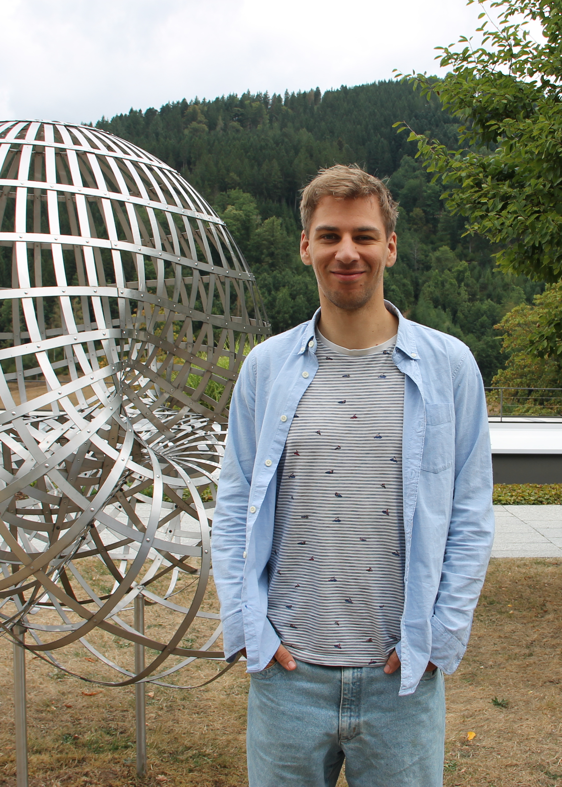

WELCOME
Fabius Krämer
Researcher · Institute for Mathematics · Interdisciplinary Center for Scientific Computing · Heidelberg University
Hello! I am a researcher working in applied geometric analysis, based in the beautiful city of Heidelberg. My favorite application area is theoretical data science. I try to understand the different aspects of mean curvature flow, especially its discretization via thresholding schemes.
Currently, I investigate questions regarding the convergence of the thresholding scheme. The main difficulty is the strong nonlinearity caused by the thresholding, together with the lack of comparison principles in constrained or multiphase versions.
Outside my research, I enjoy all kinds of sports. I am also trying to learn sketching, origami, and playing the piano.
Research interests
Applied Geometric Analysis · Numerical Analysis · Calculus of Variations · Optimization · Nonlinear PDEs · Mathematical Foundations of Machine Learning
Feel free to get in touch if you are interested in my work or would like to discuss a collaboration.